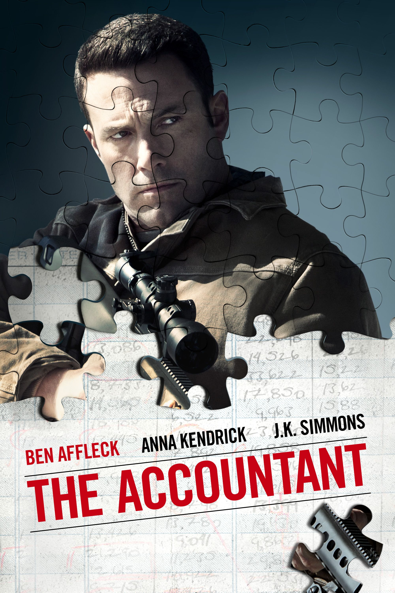
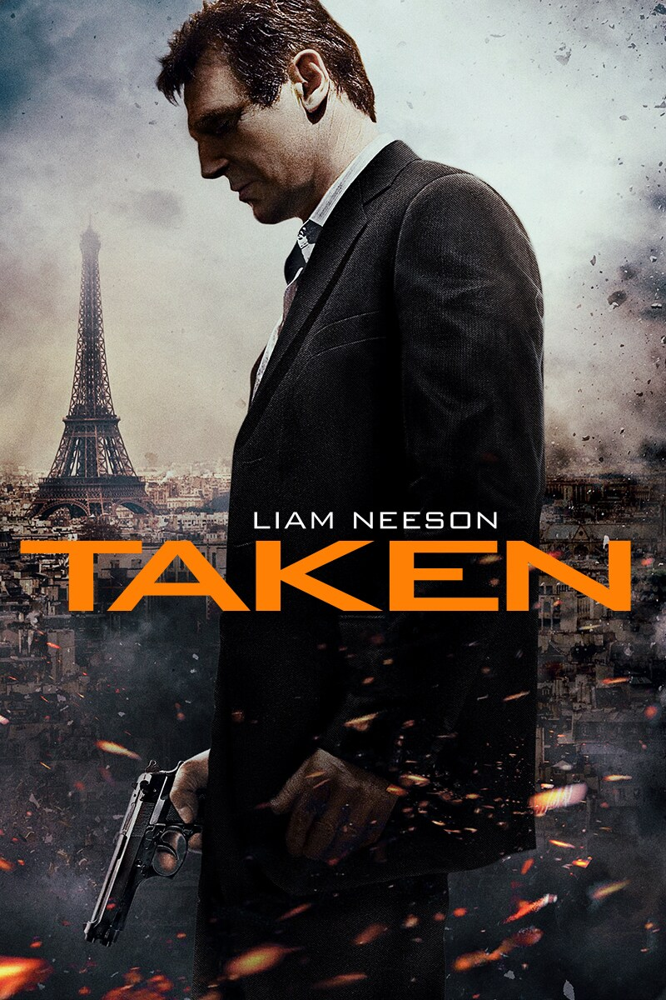

This movie is about a boy with autism who grows up to be a high-functioning perfectionist with a dark secret.
Taken is an action packed thriller movie with a former CIA agent who stops at nothing to rescue his kidnapped daughter.
Stylish and brutal underworld crime action movie about a hitman who comes out of retirement to seek revenge.